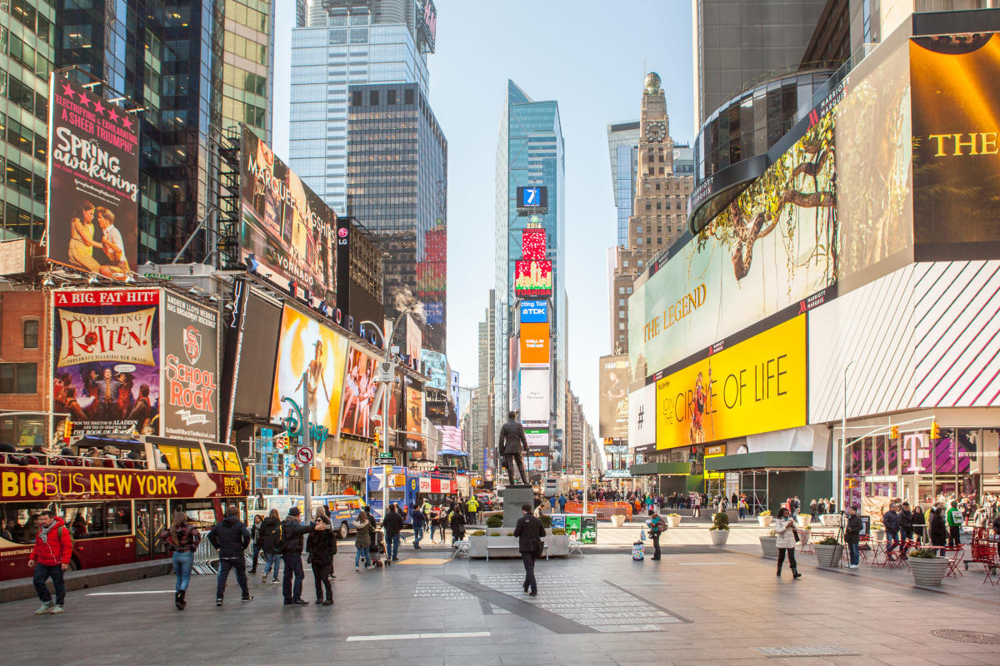
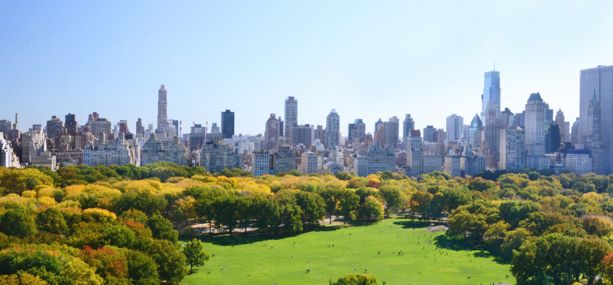
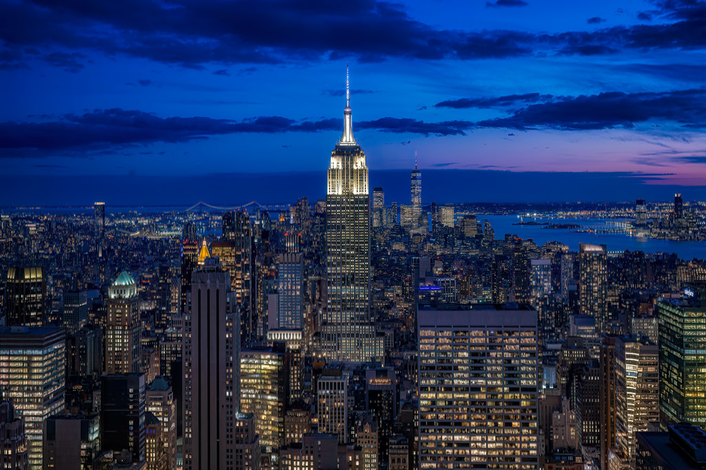
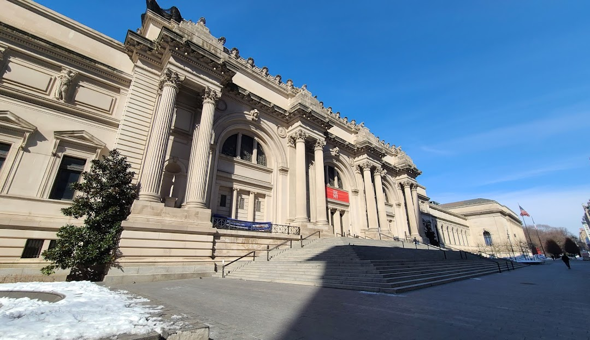
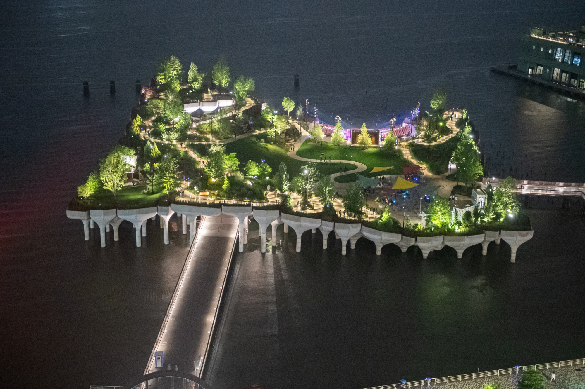

The Statue of Liberty, a symbol of freedom and democracy, is located
on Liberty Island in New York Harbor. Gifted by France in 1886, this
iconic monument welcomes visitors with its inspiring history and
panoramic views of the city.

Times Square
Times Square, known as "The Crossroads of the World," is a bustling
commercial and entertainment hub in Midtown Manhattan. Famous for its
bright lights, Broadway theaters, and vibrant atmosphere, it is a
must-visit destination for tourists.

Central Park
Central Park is an urban oasis in the heart of Manhattan, offering 843
acres of lush landscapes, walking paths, and recreational areas. It is
a perfect place to relax, enjoy outdoor activities, and explore famous
landmarks like Bethesda Terrace and Strawberry Fields.

Empire State
The Empire State Building, an iconic skyscraper in Midtown Manhattan,
stands 1,454 feet tall. Completed in 1931, it offers stunning
360-degree views of New York City from its observation decks on the
86th and 102nd floors.

The Metropolitan Museum of Art
The Metropolitan Museum of Art, often referred to as "The Met," is one
of the largest and most prestigious art museums in the world. Located
on Fifth Avenue, it houses an extensive collection of art spanning
over 5,000 years.

Little Island
Little Island, a unique public park located on the Hudson River, is a
man-made oasis built on the remnants of Pier 54. Opened in 2021, this
innovative green space features lush landscaping, walking paths, and
performance spaces, providing a serene escape and stunning views of
the river and city skyline. It's a perfect spot for relaxation,
entertainment, and enjoying nature in the heart of New York City.